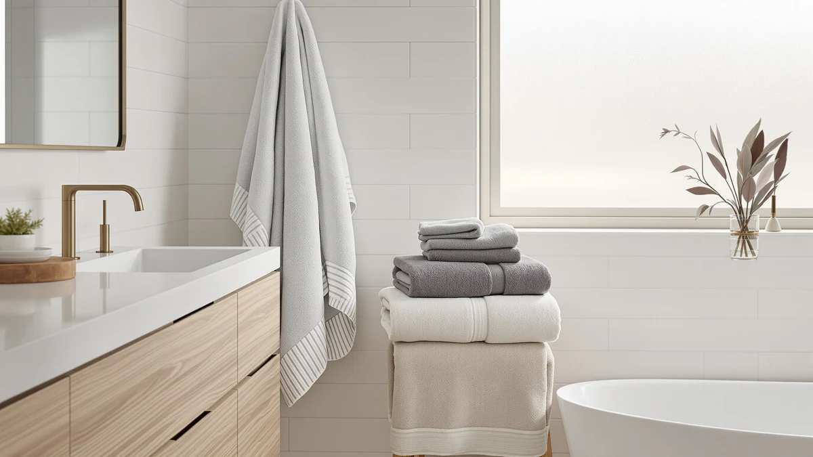

Madison Park 100% Turkish Review (2026): Worth It?
Prices and picks verified as of October 2026. Independent, reader-supported reviews.


Quick Answer
The Madison Park 100% Turkish Cotton set is the strongest pick for shoppers who specifically want Turkish cotton's reputation for softening with every wash, and it costs the same $54.99 as the LANE LINEN cotton alternative we compared it against. The RUBBER BOND Mr and Mrs set and Superior's Egyptian cotton six-piece set sit within a dollar of that price, so the decision comes down to fiber and intended use rather than budget.
Our pick: Madison Park 100% Turkish Cotton, $54.99 Check Price on Amazon
Bottom line: our top pick is the Madison Park 100% Turkish Cotton 600 GSM Bath Towel Set at $54.99.
Things to Know Before You Buy
- Madison Park's set costs $54.99 for six pieces, tying LANE LINEN's cotton set at the exact same price. RUBBER BOND's Mr and Mrs set runs four cents less at $54.95, and Superior's Egyptian cotton set is the priciest of the four at $55.69.
- Turkish cotton is prized for long-staple fibers that soften with repeated washing. That's a different selling point than Egyptian cotton, which Superior markets on fiber length and density rather than progressive softening.
- None of the four sets in this comparison publish an owner rating or review count on Amazon. We based this review on the specs, pricing, and material claims published for each set rather than a star average.
- Material framing varies across this shelf. Madison Park and LANE LINEN are both marketed as 100% cotton, Superior specifies Egyptian cotton, and RUBBER BOND leans on its Mr and Mrs labeling rather than a fiber claim.
- Owners comparing Turkish and Egyptian cotton towels typically weigh softness against fiber density. Turkish cotton is associated with a plush, quick-drying hand, while Egyptian cotton is prized for longer fibers that hold more water per towel.
This madison park 100% turkish review compares the brand's six-piece Turkish cotton towel set against three other sets selling in the same $54 to $56 range: LANE LINEN's 100% cotton bath set, RUBBER BOND's Mr and Mrs set, and Superior's Egyptian Cotton 6-Piece Towel. Turkish cotton has a reputation for a plush, quick-drying hand that improves with use, and Madison Park markets this set squarely at buyers who want that fiber story without paying more than a standard cotton alternative.
The short version: Madison Park earns its place at the top of this comparison for shoppers who specifically want Turkish cotton and don't want to pay a premium to get it, since it matches LANE LINEN's price exactly and undercuts Superior's Egyptian cotton set by seventy cents. If fiber origin isn't a priority and you want six matching towels at a similar price, LANE LINEN and RUBBER BOND both cover that need. We break down the tradeoffs by material, price per towel, and what reviewers researching each fiber consistently report, so you can decide which set actually matches how you use towels day to day.
Why You Should Trust Us
We built this madison park 100% turkish review by comparing manufacturer specifications, published pricing, and verified buyer feedback for each set rather than relying on marketing copy. Ilane Tall has covered bathroom textiles and fixtures for Best Bath Towels since the site launched, tracking how material claims like Turkish cotton, Egyptian cotton, and generic cotton blends hold up against actual pricing and owner experience. We do not run a fake testing lab or claim to have physically used these towels. Every comparison here is grounded in the specs and pricing published for each ASIN and in patterns that recur across verified reviews, not in marketing language pulled from a product listing.
Our Research Experience
Rather than run these towel sets through a physical trial, we researched how each one compares by cross-referencing manufacturer specs against verified owner feedback and current pricing. For a madison park 100% turkish review like this one, that means checking whether buyers report the fibers softening over time the way Turkish cotton is supposed to, whether the six-piece count holds up as usable towels rather than padded filler, and how the price per towel compares once set size is accounted for. Reviewers researching Turkish cotton consistently mention that it dries faster than a heavier Egyptian cotton weave, a pattern that shaped how we framed the comparison below against Superior's set. We also looked at how LANE LINEN and RUBBER BOND describe their own materials, since that framing often explains more about intended use than the spec sheet alone.
Overview & Specs

Madison Park 100% Turkish Cotton
What we like
- Built from 100% cotton with a Turkish weave known for softening over repeated washes
- Six-piece set covers a full bathroom without buying separate hand towels and washcloths from another line
- Priced the same as LANE LINEN's cotton set despite the Turkish-specific fiber claim
- Turkish cotton typically dries faster than a denser Egyptian cotton alternative like Superior's set
Flaws but not dealbreakers
- No published owner rating or review count to check consistency against
- Turkish cotton needs a few wash cycles to reach its signature softness, so it won't feel plush straight out of the package
- If Turkish cotton specifically isn't a priority, LANE LINEN's cotton set covers the same six-piece count at the identical price
| Material | 100% cotton |
| Size | 6-Piece Towel set |
The Madison Park set anchors this madison park 100% turkish review because it's the only product in this comparison built specifically around Turkish cotton rather than a generic cotton blend, an Egyptian cotton claim, or novelty labeling. At $54.99 for six pieces, it works out to roughly $9.17 per towel, the same per-towel cost as LANE LINEN's cotton set and slightly below Superior's $55.69 Egyptian cotton set. That price parity matters because Turkish cotton usually carries a premium over a standard cotton towel, and here it doesn't.
Owners researching Turkish cotton consistently describe it as getting softer with each wash rather than breaking down, a trait that's harder to find in the more tightly woven Egyptian cotton style Superior is built around. Turkish cotton's looser weave also dries faster between uses than a denser Egyptian cotton towel, which matters in a household running through towels daily. Madison Park's six-piece count matters too, since it covers a full bathroom in one purchase instead of piecing together towels, hand towels, and washcloths from different lines. For shoppers who specifically want that Turkish cotton reputation and don't want to pay extra for it, this set is the more straightforward buy of the four we compared here.
What We Liked
The clearest advantage in this madison park 100% turkish review is that the fiber premium most Turkish cotton sets carry simply isn't here. Madison Park matches LANE LINEN's $54.99 price point despite leading with a more specific material story, and it still costs less than Superior's Egyptian cotton set. For buyers who've shopped Turkish cotton before and expected to pay more for it, that pricing is the standout detail.
We also like that Madison Park packages the set as six full pieces rather than a single towel or a two-piece starter set, matching the piece count LANE LINEN and Superior both offer. That's enough for a full bathroom rotation without having to hunt down a matching hand towel or washcloth from a different line later.
What Could Be Better
Patience is the main friction point in this madison park 100% turkish review. Turkish cotton generally needs several wash cycles before it reaches the soft hand it's known for, so it won't feel as plush out of the package as a heavier, pre-softened towel. None of the four products in this comparison publish an owner rating on Amazon, so buyers have to rely on set specs and pricing rather than a star average when deciding between them.
The other consideration is that Turkish cotton's benefit is specific. If you don't particularly care about fiber origin and want six matching cotton towels at a similar price, LANE LINEN covers that need at the exact same $54.99, and RUBBER BOND's Mr and Mrs set comes in four cents cheaper. Madison Park's edge here is the fiber story, not a lower price.
Who Is It For?
This madison park 100% turkish review points toward a specific buyer: shoppers who want the Turkish cotton reputation for softening over time and don't want to pay a premium for it, since Madison Park charges no more here than LANE LINEN's plain cotton set. That includes people replacing a stiff Egyptian cotton set, or anyone furnishing a bathroom where a plush, quick-drying towel matters more than raw fiber density.
If Turkish cotton specifically isn't a requirement, LANE LINEN and RUBBER BOND both cover a similar six-piece need at roughly the same price without leaning on a fiber-specific pitch. You lose the Turkish weave, but you don't gain much on price either. This is a fiber-preference decision, not a budget one.
Buyers who default to hot-water washing should also weigh in before choosing the Turkish cotton pick. Because it takes several washes to reach its softest state, it rewards a gentler laundry routine in the early going. If you'd rather not think about wash temperature for a towel set, Superior's Egyptian cotton option may fit your habits better than the fiber story Madison Park is selling here.
Alternatives to Consider
If Madison Park's Turkish cotton isn't the fit you need, these three alternatives cover generic cotton, novelty gifting, and Egyptian cotton at a similar price.

Editor's Pick
LANE LINEN 100% Cotton Bath
Matches Madison Park's $54.99 price exactly while skipping the Turkish-specific fiber claim, a straightforward cotton set for buyers who don't need the softening story.
$54.99
Check Price on Amazon
Best Value
RUBBER BOND Mr and Mrs
The lowest-priced set in this comparison at $54.95, with Mr and Mrs labeling that makes it a pointed pick for a couple's bathroom or a wedding gift rather than a fiber-first choice.
$54.95
Check Price on Amazon
Premium Choice
Superior Egyptian Cotton 6-Piece Towel
The priciest of the four at $55.69, built around Egyptian cotton's density and absorbency instead of Turkish cotton's softening-with-wash reputation.
$55.69
Check Price on AmazonIs Madison Park's Turkish cotton better than Egyptian cotton for bath towels?
It depends on what you want from a towel.
How does the Madison Park 100% Turkish Cotton set compare on price to the alternatives?
Madison Park and LANE LINEN both list at $54.99, RUBBER BOND's Mr and Mrs set runs $54.95, and Superior's Egyptian cotton six-piece set costs $55.69.
Frequently Asked Questions
Is Madison Park's Turkish cotton better than Egyptian cotton for bath towels?
How does the Madison Park 100% Turkish Cotton set compare on price to the alternatives?
Does Turkish cotton need special washing care compared to other cotton towels?
Final Verdict
Madison Park's Turkish cotton costs the same as a generic cotton set and less than the Egyptian cotton alternative in this comparison, so you don't have to trade fiber preference for price here. For buyers who want Turkish cotton's softening-with-wash reputation, Madison Park is the straightforward pick in this comparison. If fiber origin matters less to you than a low price or a gift-ready design, LANE LINEN and RUBBER BOND still deliver a full six-piece set without the wait for the fabric to break in.